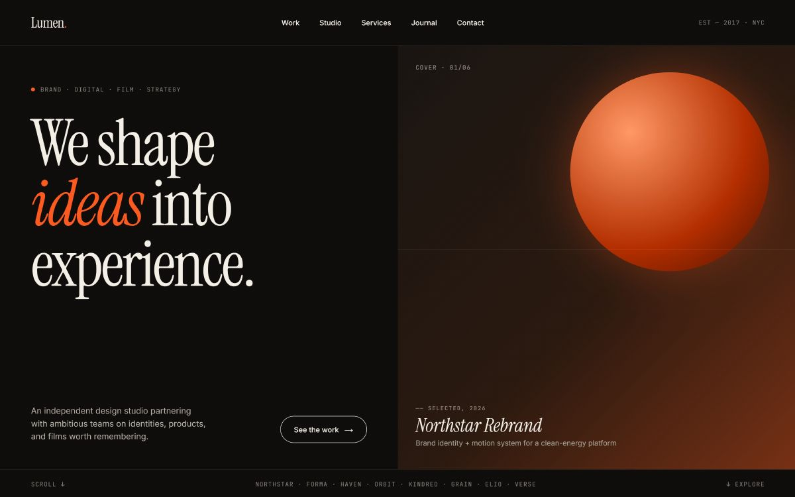
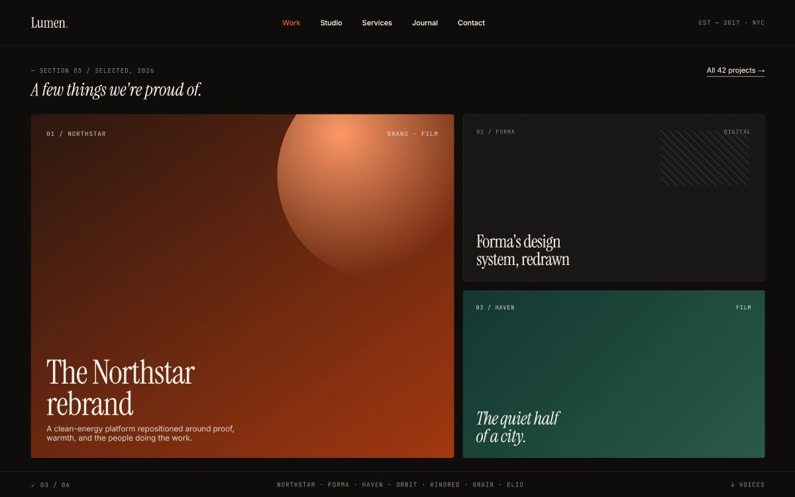
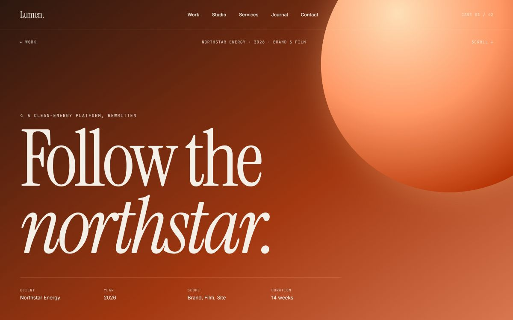
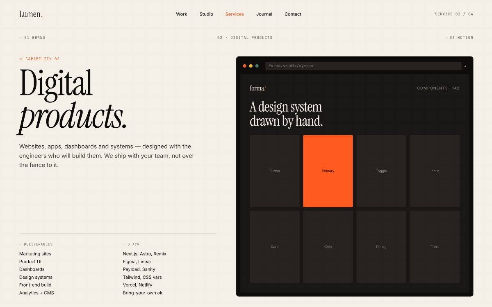
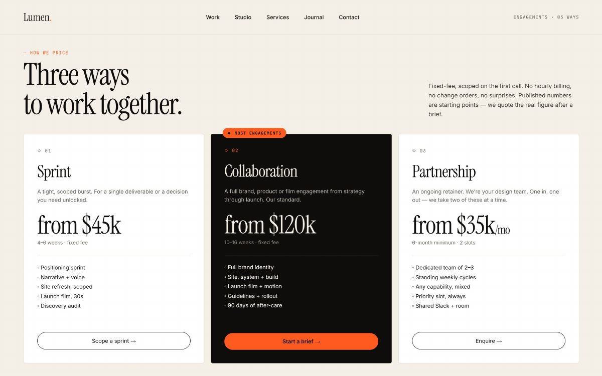
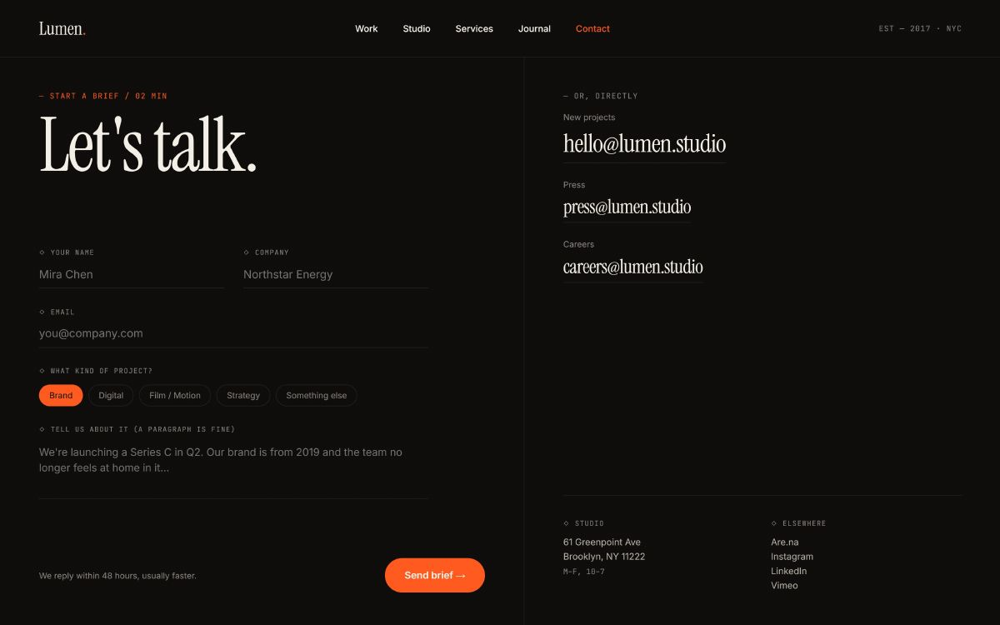

Open to remote rolesNigeriaWAT · UTC+1
Muhammed Usman
Video editor · Copywriter · Scriptwriter · Web developer
I write the script, then I cut the video.
I make short-form ads, UGC-style videos and YouTube content, animate them in Remotion, write the hooks, scripts and copy that go with them, and build the websites they send people to.
- What I do
- Video, scripts, copy, websites
- In this portfolio
- 4 videos, 2 writing samples, 1 website concept
- Availability
- Remote roles and freelance
- Time zone
- WAT (UTC+1)
Showreel
Animated in code
Four sample videos built with Remotion, a React tool for making video. I made them for this portfolio, so they are samples, not client work. Each has its own soundtrack: press the speaker icon on the player to turn the sound on.
Web development
Websites, designed and built.
A 30-screen website concept for a made-up design studio, "Lumen". It covers home, services, work, case studies, journal, careers, pricing, contact and error pages in one consistent system. Six screens below; tap one to enlarge. It is a concept I designed to show how I plan and build a full site, not a client project.






Writing
Scripts and copy
A video script I would hand to an editor, and the ad copy that goes with it. Timecode, visual and voiceover sit in one table, so the person cutting it knows exactly what to show and say.
Sample script · fictional product
| Time | Visual | Voiceover |
|---|---|---|
| 0:00 | Bottle drops onto a desk | I drank two litres a day for a month. I was off by half. |
| 0:03 | On-screen text: "The lines are guesses" | Most bottle markings are decoration. Nobody checks them. |
| 0:10 | Pouring into a measuring jug | So I poured it out and measured. |
| 0:18 | Close on the inner markings | These are printed inside and checked every 250 ml. |
| 0:28 | Old bottle and new bottle side by side | The old one said two litres. The jug said 1.1. |
| 0:38 | Product shot with link | Link below if you want to stop guessing. |
Sample ad copy · fictional product
Two litres means two litres.
Most bottle lines are decoration. Ours are printed from the inside and checked every 250 ml, so you know what you actually drank today.
Dishwasher safe. Free returns for 30 days.
Shop nowBoth samples are for a fictional product. They show how I structure a script and how I write an ad. Full video samples and project links are available on request through LinkedIn.
Services
Four skills, one workflow
Most video work stalls between the writer and the editor. I do both, so the script is written to be cut and the cut follows the script. I also build the website the video points to.
Video editing
Pacing, cuts and finish for ads and long-form. I run my own faceless YouTube channel about AI tools, so I work the full pipeline daily.
- Short-form and UGC-style ads
- YouTube videos and explainers
- Animated explainers built with Remotion
- Captions, sound and color
Scriptwriting
Scripts that sound like a person talking, built around retention.
- Hooks for the first 3 seconds
- Open loops and pattern interrupts
- Scene-by-scene scripts with timecodes
- YouTube scripts of any length
Copywriting
Words that sell, for the ad and for the page behind it.
- Ad headlines and primary text
- UGC creator briefs
- Product page copy
- Articles and long-form writing
Web development
Fast pages that send viewers somewhere useful.
- Portfolio and business websites
- Landing pages for ads and offers
- Web apps built with React
- Pages that work on a phone
Process
How a project runs
-
Brief
You send the product, the offer and any footage. I ask what the viewer should do at the end.
-
Script
I outline each section first. You approve the outline before I write the full script.
-
Rough cut
Footage assembled to the script, with pacing and voiceover timing in place.
-
Polish
Captions, music levels, sound, color and on-screen text, then your revisions.
-
Delivery
Final files in the sizes you need, captions as SRT and the script as a document.
One 45-second ad, laid out
How a short ad is planned before it is cut: script sections on top, then picture, voiceover, music and captions on their own tracks.
- 9:16 · 1080 × 1920
- 30 fps
- Hook inside 3 s
- Burned-in captions + SRT
Tools I use daily
- CapCut
- Remotion
- Canva
- Claude
- ChatGPT
- Higgsfield
- Google Flow
Contact
Let's work together.
I'm open to remote roles and freelance projects. Message me with what you are making and when you need it.
- LinkedInlinkedin.com/in/muhammedusman-editor
- Emailusmanmuha445@gmail.com
- WhatsApp+234 806 868 7796